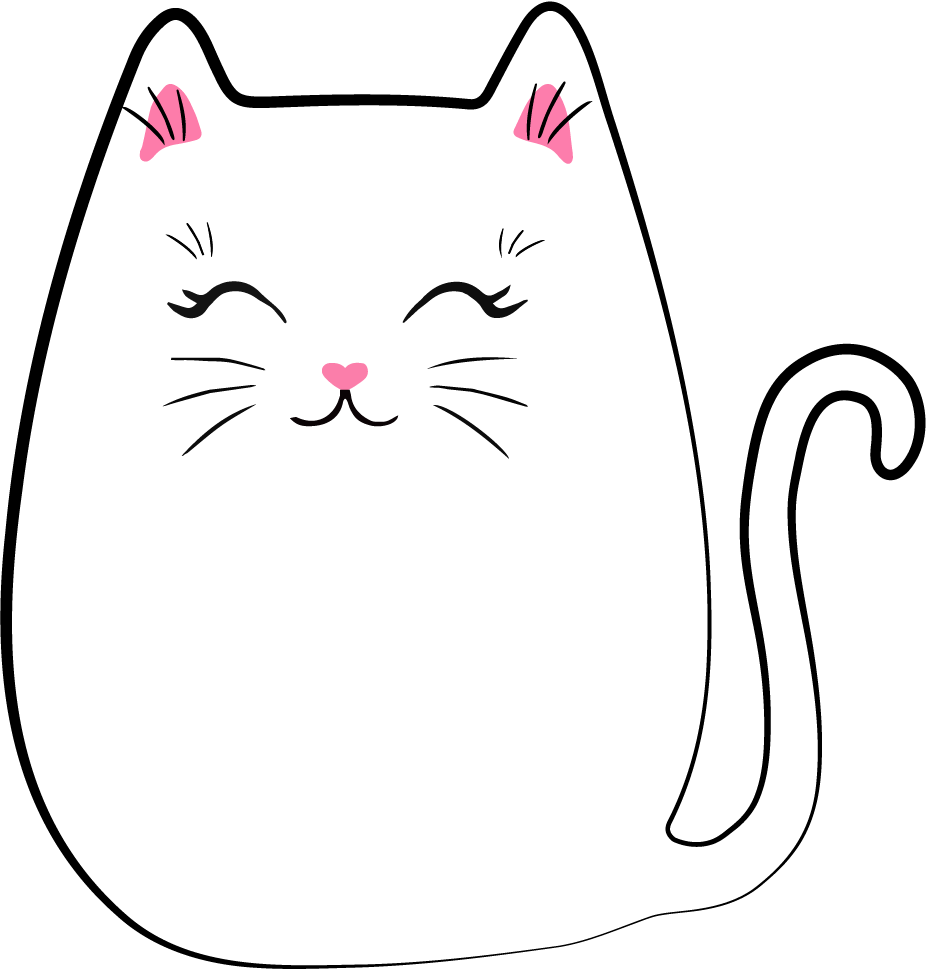
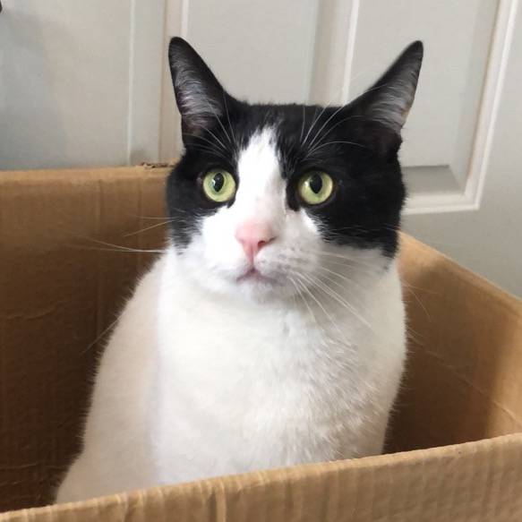
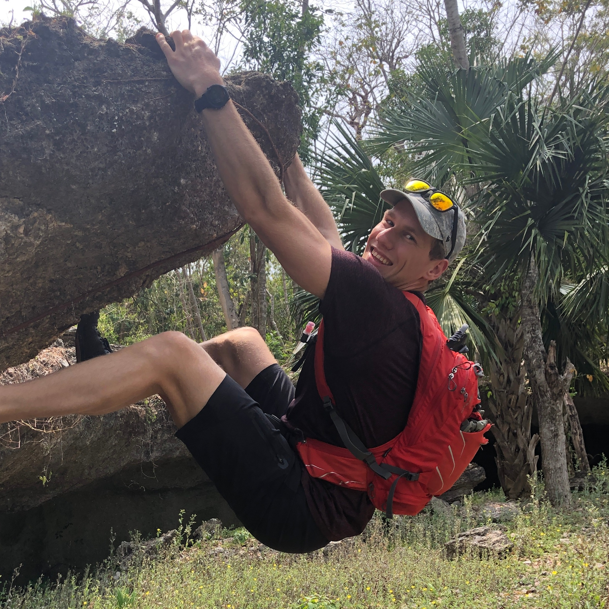
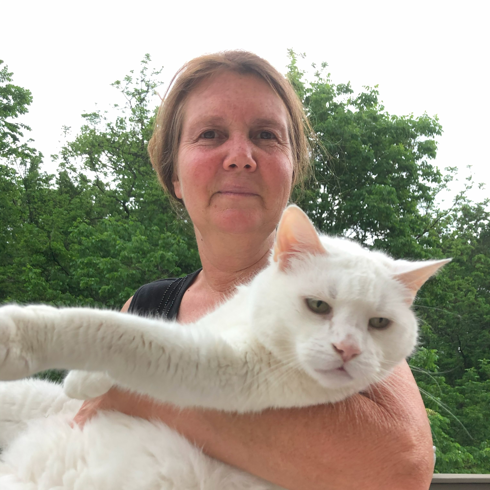
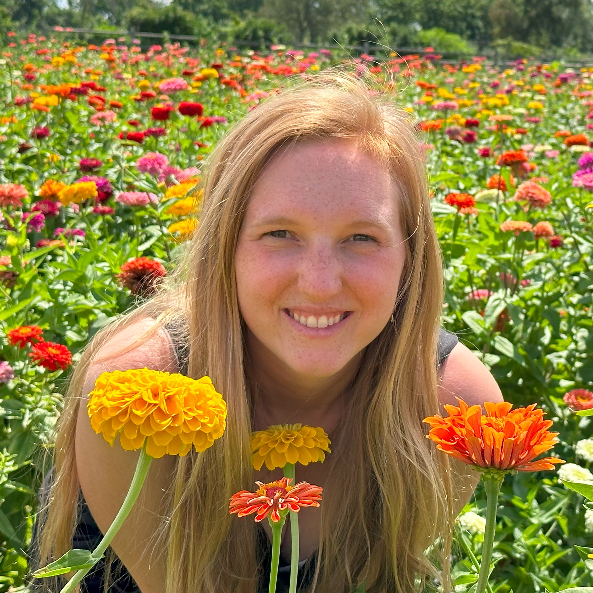
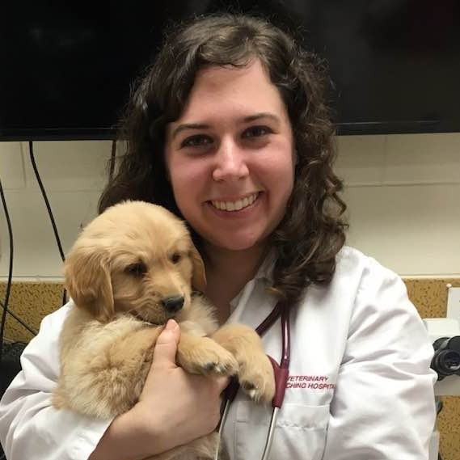

<!DOCTYPE html>
<html>
    <head>
        <link rel="stylesheet" href="./style.css">
        <link rel="preconnect" href="https://fonts.googleapis.com">
        <link rel="preconnect" href="https://fonts.gstatic.com" crossorigin>
        <link href="https://fonts.googleapis.com/css2?family=Advent+Pro:wght@100;200;300;400;500;600;700;800;900&family=Dancing+Script:wght@400;500;600;700&family=Josefin+Sans:ital,wght@0,100;0,200;0,300;0,400;0,500;0,600;1,100;1,200;1,300;1,400;1,500&family=Raleway:ital,wght@0,100;0,200;0,300;0,400;1,100;1,200;1,300&family=Saira:wght@100;200;300;400;500;600;700;800;900&family=Signika+Negative:wght@300;400;500;600;700&display=swap" rel="stylesheet">
        <link rel = "icon" href="./images/logo.png" type="image/x-icon">
        <title>Catopia Cat Cafe</title> 
    </head>
</html>
<body>

    <!-- Header -->
    <header>
        <div class="header">
            <div class="left-head">
                
                <a class="nav" href="#hours">
                    <h1 class="catopia">Catopia Cat Cafe</h1>
                </a>
            </div>
            <nav class="navigation">
                <ul>
                    <li><a class="nav" href="#about">About Us</a></li>
                    <li><a class="nav" href="#cats">Cats</a></li>
                    <li><a class="nav" href="#team">Team</a></li>
                    <li><a class="nav" href="#hours">Contact Us</a></li>
                </ul>
            </div> 
        </nav>
    </header>

    <!-- Main Content -->
    <div class="main-content">

            <!-- Hours -->
            <section id="about" class="anchor">
                    <div class="banner flex-left"></div>
                    <div class="flex-right">
                        <h1 class=title>About Us</h1>
                            <div class="about">
                                <h3>Coffee ♥ Kitties ♥ Cuddles</h3>
                                <p>Welcome! Thanks for visiting. Catopia Cat Cafe is a cafe with a purpose. Not only do we have delicious organic coffee and teas, artisan cocktails and delectable breakfasts, we have cats to keep you company!! 
                                    And if you're looking for your furever companion, our cats are adoptable.
                                    <br>We are saving cats one cup of coffee at a time.</p>
                                <hr>
                                <p>Looking for ways to help?</p>
                                <div class="buttons">
                                    <button>Volunteer</button> 
                                    <button class="negative">Donate</button>
                                </div>
                                <hr>
                                <div class="follow">
                                    <p>Stay up to date on our latest events by signing up for our newsletter!</p>
                                    <div class="signup">
                                        <input type="email" class="email" pattern=".+@globex\.com" placeholder="example@email.com" size="40" />
                                        <button>Sign Up</button>
                                    </div>
                                </div>
                            </div>
                        
                    </div>
            </section>

        <!-- Cats -->
        <section id="cats" class="anchor">
            <h1 class=title>Our Cats</h1>
            <p class="description">Want to adopt but not sure which kitty is right for you? <br> Grab an artisan coffee or one of our specialty cocktails and get to know our furry friends in a relaxed environment before bringing one (or more) home!</p>
            <div class="container cats">
                <div class="item">
                    
                    <h4>Ginny</h4>
                    <div class="overlay">
                        <div class="bio">
                            <p>Hello, I’m Ginny!<br>I’m a 4-month-old spayed calico female. I have experience living harmoniously with a small dog and have a knack for getting along with children. I’m your typical kitten who loves to play! Interested in meeting with me? Stop by today!!</p>
                        </div>
                    </div>
                </div>
                <div class="item">
                    
                    <h4>Marcus</h4>
                    <div class="overlay">
                        <div class="bio">
                            <p>Introducing Marcus!<br>I’m a 4-month-old neutered male domestic shorthair. I was part of a transport from Florida due to Hurricane Idalia. I’m your typical kitten who loves to play! Interested in meeting with me? Stop by today!!</p>
                        </div>
                    </div>
                </div>
                <div class="item">
                    
                    <h4>Walter</h4>
                    <div class="overlay">
                        <div class="bio">
                            <p>Hi there, I’m Walter!<br>I’m a 4-month-old neutered male domestic shorthair. This big guy’s absolute favorite thing is climbing to the highest spot he can find and looking down on his kingdom. If you’re searching for a regal feline companion to reign supreme in your home, then look no further. Larry awaits his kingdom!</p>
                        </div>
                    </div>
                </div>
                <div class="item">
                    
                    <h4>Loretta</h4>
                    <div class="overlay">
                        <div class="bio">
                            <p>Hello, my name is Loretta!<br>I’m a 4-month-old spayed calico wash female. I was born with a stumpy tail, but that doesn't stop me from practicing my acrobatics!!</p>
                        </div>
                    </div>
                </div>
                <div class="item">
                    
                    <h4>Norbert</h4>
                    <div class="overlay">
                        <div class="bio">
                            <p>Hi there, I’m Norbert!<br>I’m a 4-month-old neutered male domestic shorthair. I was part of a transport from Florida due to Hurricane Idalia. I’m your typical kitten who loves to play! Interested in meeting with me? Stop by today!!</p>
                        </div>
                    </div>
                </div>
                <div class="item">
                    
                    <h4>Barbie</h4>
                    <div class="overlay">
                        <div class="bio">
                            <p>Hi my name is Barbie!<br>I'm a 2-year-old spayed famale domestic shorthair. I have lived with cats before, with mixed results, but would prefer to be a solo kitty. I can be a little shy at first so I’m looking for a home that will give me time to come out of my shell.</p>
                        </div>
                    </div>
                </div>
                <div class="item">
                    
                    <h4>Devon</h4>
                    <div class="overlay">
                        <div class="bio">
                            <p>Hi I'm Devon!<br>I’m a playful 4-mont-old spayed female looking for a home that is going to give me plenty of toys and attention! I have experience living harmoniously with dogs. Interested in meeting with me? Stop by today!</p>
                        </div>
                    </div>
                </div>
                <div class="item">
                    
                    <h4>Pebbles & Elise</h4>
                    <div class="overlay">
                        <div class="bio">
                            <p>Meet Pebbles (left) and Elise (right), two inseparable 4-month-old siblings that are the complete package. Elise is the talkative one, always ready to express her opinions, while Pebbles, the quieter of the pair, steals hearts with her adoration for belly rubs. Their bond is unbreakable, and they’re eager to fill a home with double the love and companionship.</p>
                        </div>
                    </div>
                </div>
                <div class="item">
                    
                    <h4>Victor</h4>
                    <div class="overlay">
                        <div class="bio">
                            <p>Hi there, I’m Victor!<br>I’m a 4-year-old neutered male domestic shorthair. I love to roll over and show you my white tummy!</p>
                        </div>
                    </div>
                </div>
                <div class="item">
                    
                    <h4>Larry</h4>
                    <div class="overlay">
                        <div class="bio">
                            <p>Introducing Larry!<br> Larry is a 6-year-old neutered male. He is absolutely not a fan of dogs, and says no thanks. Larry might need a little encouragement on his weight management journey, though he’s convinced she’s simply marvelous. Larry is looking for a home where he can be the sole focus of your love and attention. </p>
                        </div>
                    </div>
                </div>
                <div class="item">
                    
                    <h4>Dorthy</h4>
                    <div class="overlay">
                        <div class="bio">
                            <p>Hi there, I’m Dorthy!<br>I’m a 4-month-old spayed female. I’m a sweet and loving girl looking for a home to give me the time and attention I deserve.</p>
                        </div>
                    </div>
                </div> 
            </div>

        <!-- Team -->
        <section id="team" class="anchor">
            <h1 class=title>Team</h1>
            <p class="description">Our team is dedicated to helping animals in need and providing a safe, fun environment for you to get to know your next furry friend!</p>
            <div class="container team">
                <div class="item">
                    
                    <h4>Alex</h4>
                    <p>Artisan Coffee & Specialty Cocktails</p>
                </div>
                <div class="item">
                    
                    <h4>Bill</h4>
                    <p>Gourmet Breakfast Chef</p>
                </div>
                <div class="item">
                    
                    <h4>Brenda</h4>
                    <p>Cat Rescuer</p>
                </div>
                <div class="item">
                    
                    <h4>Megan</h4>
                    <p>Adoption Coordinator</p>
                </div>
                <div class="item">
                    
                    <h4>Katie</h4>
                    <p>Veternarian</p>
                </div>
        </div>

            <!-- Hours -->
            <section id="contact" class="anchor">
                <div class="contact">
                    <h1 class=title>Contact Us</h1>
                    <div class="split">
                        <div class="flex-left">
                        <div class="flex-row">
                            <div class="hours">
                                <h3>Hours</h3>
                                <p>Monday: Closed</p>
                                <p>Tuesday: 8AM - 4PM</p>
                                <p>Wednesday: Closed</p>
                                <p>Thursday: 8AM - 4PM</p>
                                <p>Friday: 10AM - 9PM</p>
                                <p>Saturday: 10AM - 9PM</p>
                                <p>Sunday: 8AM - 4PM</p>
                            </div>
                            <div class="location">
                                <h3>Location</h3>
                                <p>8001 Wyoming Blvd NE #C5,</p>
                                <p>Albuquerque, NM 87113</p>
                                <p>+1 (311) 555 - 2368</p>
                                <hr>
                                <p>Live music Fridays 6 - 9PM.</p>
                                <button>View Menu</button>
                            </div>
                        </div>
                        </div>
                        <div class="flex-right">
                            <div class="google-map">
                                <iframe src="https://www.google.com/maps/embed?pb=!1m14!1m8!1m3!1d104342.17576924934!2d-106.6928329!3d35.1892037!3m2!1i1024!2i768!4f13.1!3m3!1m2!1s0x872275b03489fa5f%3A0xd5f1912af438e6e!2sCatopia%20Cat%20Cafe!5e0!3m2!1sen!2sus!4v1700160734237!5m2!1sen!2sus" allowfullscreen="" loading="lazy" referrerpolicy="no-referrer-when-downgrade"></iframe>
                            </div>
                        </div>
                    </div>
                </div>
            </section>
        
    <!-- Footer -->
    <footer>
        <div class="foot">
            <ul>
                <li>Follow Us!</li>
                <li>
                    <svg width="24" height="24" viewBox="0 0 24 24"><path d="M19 0h-14c-2.761 0-5 2.239-5 5v14c0 2.761 2.239 5 5 5h14c2.762 0 5-2.239 5-5v-14c0-2.761-2.238-5-5-5zm-3 7h-1.924c-.615 0-1.076.252-1.076.889v1.111h3l-.238 3h-2.762v8h-3v-8h-2v-3h2v-1.923c0-2.022 1.064-3.077 3.461-3.077h2.539v3z"/></svg>
                    <svg width="24" height="24" viewBox="0 0 24 24"><path d="M15.233 5.488c-.843-.038-1.097-.046-3.233-.046s-2.389.008-3.232.046c-2.17.099-3.181 1.127-3.279 3.279-.039.844-.048 1.097-.048 3.233s.009 2.389.047 3.233c.099 2.148 1.106 3.18 3.279 3.279.843.038 1.097.047 3.233.047 2.137 0 2.39-.008 3.233-.046 2.17-.099 3.18-1.129 3.279-3.279.038-.844.046-1.097.046-3.233s-.008-2.389-.046-3.232c-.099-2.153-1.111-3.182-3.279-3.281zm-3.233 10.62c-2.269 0-4.108-1.839-4.108-4.108 0-2.269 1.84-4.108 4.108-4.108s4.108 1.839 4.108 4.108c0 2.269-1.839 4.108-4.108 4.108zm4.271-7.418c-.53 0-.96-.43-.96-.96s.43-.96.96-.96.96.43.96.96-.43.96-.96.96zm-1.604 3.31c0 1.473-1.194 2.667-2.667 2.667s-2.667-1.194-2.667-2.667c0-1.473 1.194-2.667 2.667-2.667s2.667 1.194 2.667 2.667zm4.333-12h-14c-2.761 0-5 2.239-5 5v14c0 2.761 2.239 5 5 5h14c2.762 0 5-2.239 5-5v-14c0-2.761-2.238-5-5-5zm.952 15.298c-.132 2.909-1.751 4.521-4.653 4.654-.854.039-1.126.048-3.299.048s-2.444-.009-3.298-.048c-2.908-.133-4.52-1.748-4.654-4.654-.039-.853-.048-1.125-.048-3.298 0-2.172.009-2.445.048-3.298.134-2.908 1.748-4.521 4.654-4.653.854-.04 1.125-.049 3.298-.049s2.445.009 3.299.048c2.908.133 4.523 1.751 4.653 4.653.039.854.048 1.127.048 3.299 0 2.173-.009 2.445-.048 3.298z"/></svg>
                    <svg width="24" height="24" viewBox="0 0 24 24"><path d="M19 0h-14c-2.761 0-5 2.239-5 5v14c0 2.761 2.239 5 5 5h14c2.762 0 5-2.239 5-5v-14c0-2.761-2.238-5-5-5zm-.139 9.237c.209 4.617-3.234 9.765-9.33 9.765-1.854 0-3.579-.543-5.032-1.475 1.742.205 3.48-.278 4.86-1.359-1.437-.027-2.649-.976-3.066-2.28.515.098 1.021.069 1.482-.056-1.579-.317-2.668-1.739-2.633-3.26.442.246.949.394 1.486.411-1.461-.977-1.875-2.907-1.016-4.383 1.619 1.986 4.038 3.293 6.766 3.43-.479-2.053 1.08-4.03 3.199-4.03.943 0 1.797.398 2.395 1.037.748-.147 1.451-.42 2.086-.796-.246.767-.766 1.41-1.443 1.816.664-.08 1.297-.256 1.885-.517-.439.656-.996 1.234-1.639 1.697z"/></svg>
                </li>
                <li>Catopia Cat Cafe. Copyright &copy; 2024</li>
            </ul>
        </div>
    </footer>
</body>
